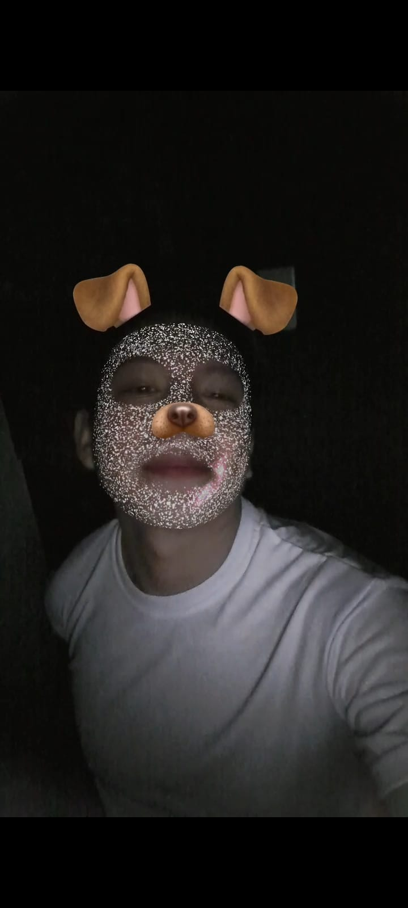
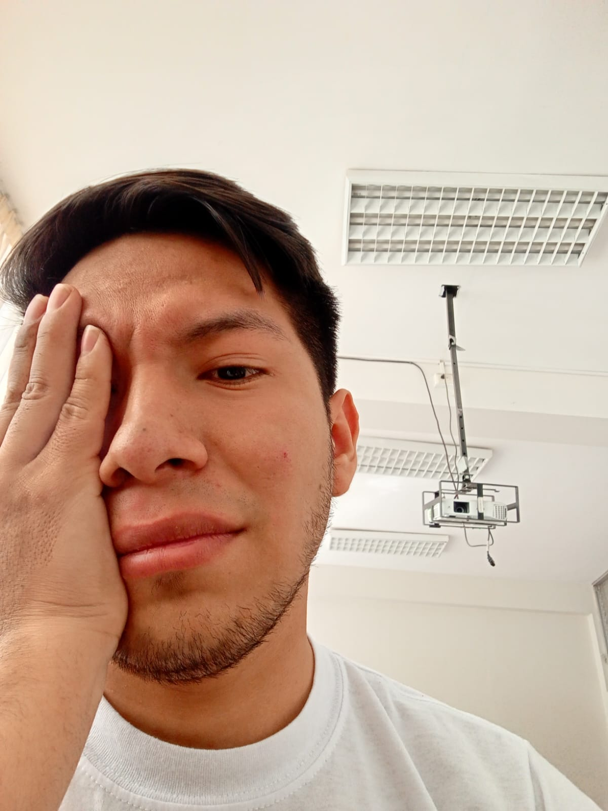
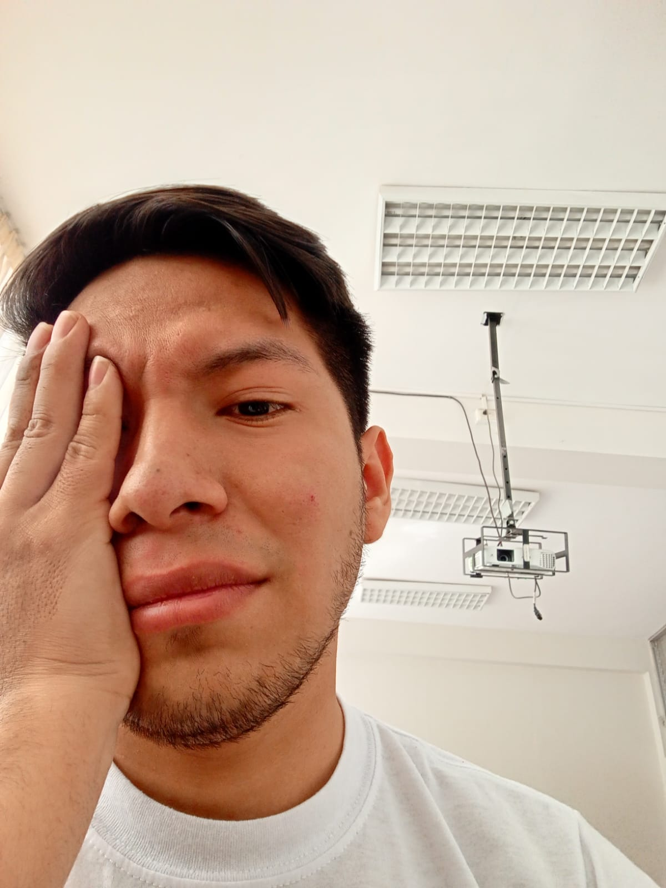
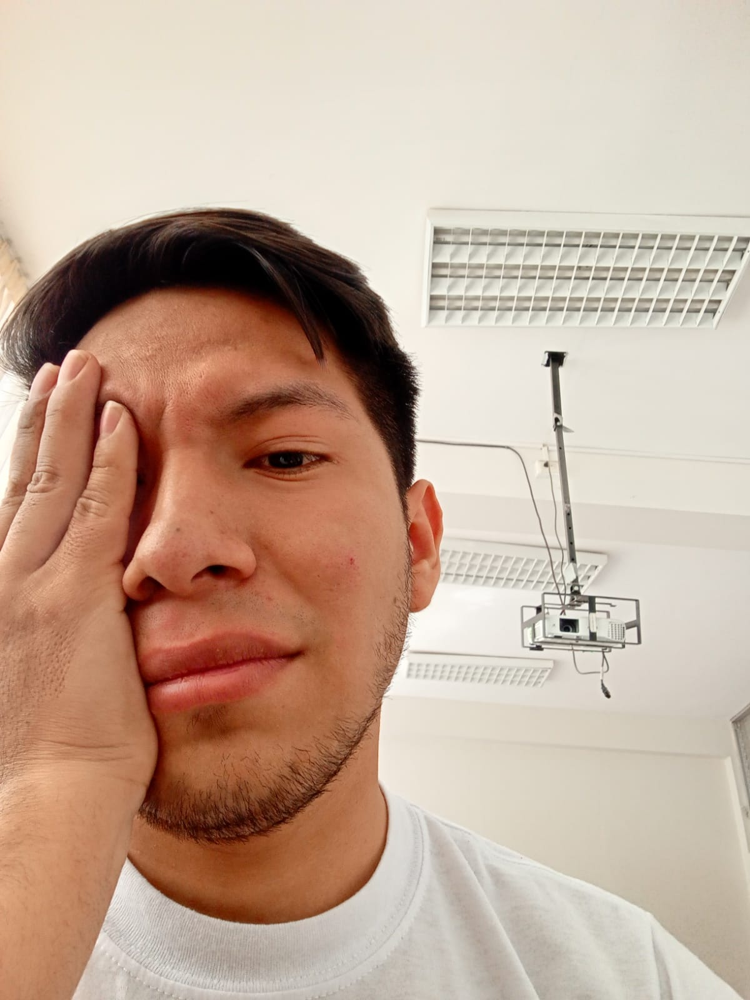

GIEDSE (GRUPO DE INVESTIGACIÓN EN EQUIDAD PARA EL DESARROLLO SOCIOECONÓMICO)
Investigación, Innovación y Desarrollo
¿Quiénes Somos?
El Semillero de Investigación (GIEDSE) grupo de investigación en equidad para el desarrollo
socioeconómico está conformado por estudiantes y docentes dedicados a la exploración y desarrollo de nuevas ideas.
MISION
“Somos un grupo de académicos que realizamos investigaciones científicas para contribuir a la sociedad,
brindando alternativas de solución a la pobreza y a la desigualdad social, a través de la gerencia social,
políticas públicas, respetando la diversidad cultural, generando cambio y desarrollo social sostenible de nuestra
comunidad, región y país”
VISION
“Aspiramos convertirnos en un referente en la Construcción de una sociedad justa, equitativa,
sostenible y consciente, desarrollando soluciones innovadoras y liderando investigaciones
que mejoren la calidad de vida y resuelvan problemas críticos de la sociedad, motivación para otros jóvenes
que quieran contribuir con el cambio y desarrollo social a través de la formación critica,
colaboración interdisciplinaria y el avance científico”
Objetivo General
Desarrollar investigaciones y soluciones innovadoras para la construcción de una sociedad justa,
equitativa y sostenible para mejorar la calidad de vida en la región y el país.
Objetivos específicos
1. Realizar estudios que identifiquen las principales desigualdades socioeconómicas y ambientales en la región y el país,
para formular soluciones adaptadas a las necesidades de la población.
2. Desarrollar modelos teóricos y aplicados que promuevan la inclusión social y la reducción de la desigualdad
en áreas como educación, salud, y acceso a servicios básicos.
3. Formar y capacitar a jóvenes investigadores y profesionales en prácticas de investigación éticas y responsables,
con un enfoque interdisciplinario que incluya aspectos sociales, económicos y ambientales.
4. Establecer alianzas con comunidades y organizaciones para asegurar la relevancia de los proyectos.
5. Identificar y reducir desigualdades socioeconómicas y ambientales mediante investigaciones aplicadas.
6. Publicar resultados de investigación en revistas científicas y medios accesibles al público en general,
fomentando la sensibilización y la educación de la ciudadanía en temas de justicia y sostenibilidad.


Líneas de Investigación
Próximos Eventos
Mantente informado de nuestros próximos eventos y presentaciones:
Simposio de Investigación - 15 de Noviembre 2024
Taller de Innovación Tecnológica - 5 de Diciembre 2024

 
